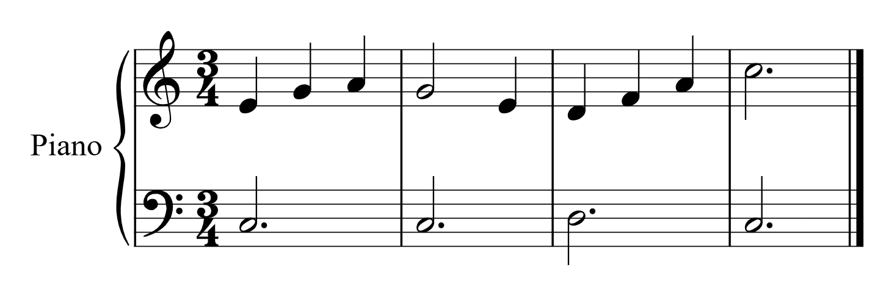

Score reader.
Scan a passage and learn how to play it, note by note.
Score scanner
Camera off
Preparing offline setup…
Open this app from your Home Screen before downloading the scanner. Photos and PDFs are read on this device.
PIANO STUDYMorning WalkAndante

Upload a photo or PDF, or frame a passage with the camera.
Passage guide
Built-in study
Morning Walk
Time signature3/4
KeyC major
Count it
Practice tip
Count three even beats in each measure.
Note explorer
Tap a beat to hear its notes and see where your fingers go.
Learn to read.
Read a note, find it on the piano, or practice counting a rhythm.
Learn keys.
Explore a key, learn its scale, then try it at the piano.
Key library
Scale lesson
Suggested fingerings appear above the treble staff for your right hand and below the bass staff for your left. On either hand, 1 is your thumb and 5 is your little finger.
Music engraving by VerovioSpot the key signature
Key signature
Tonic triad
Play the scale
Play along.
Follow the falling notes. The music waits for you to play the right keys.
Saved pieces.
Passages saved for practice on this device.